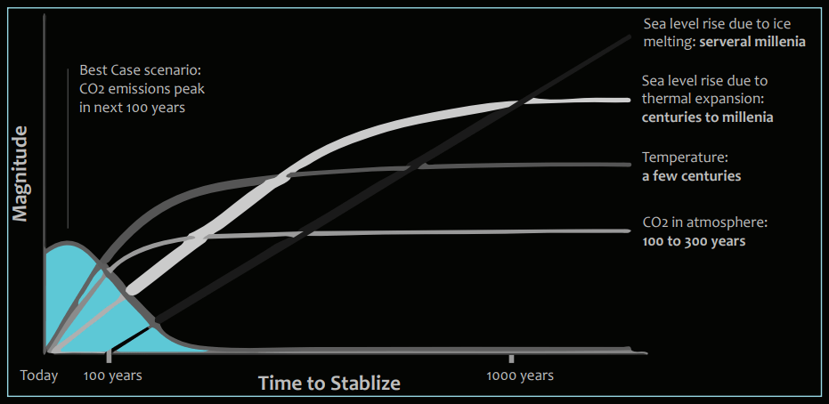
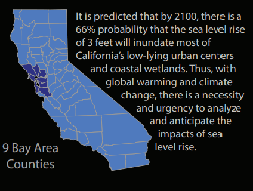
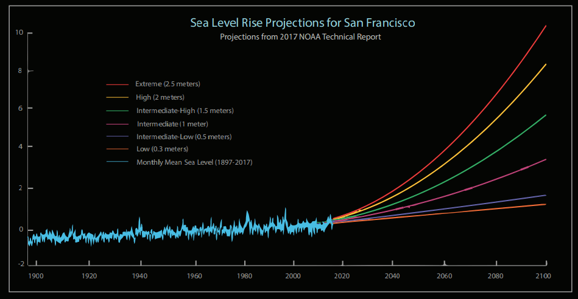
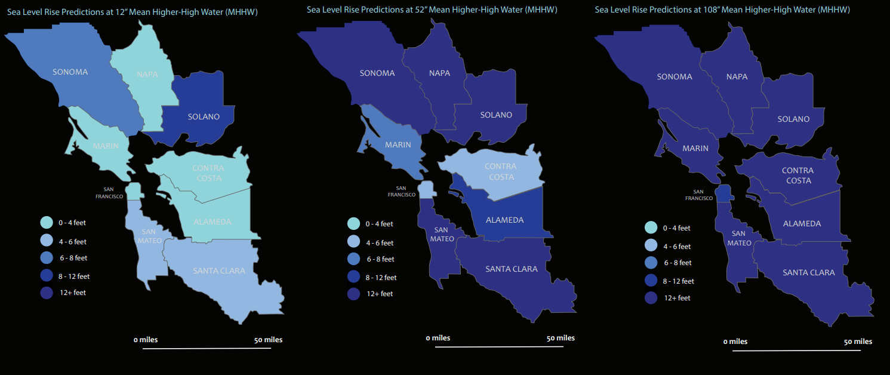
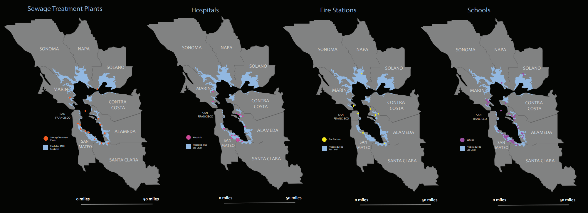
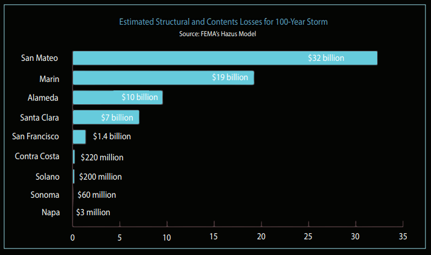
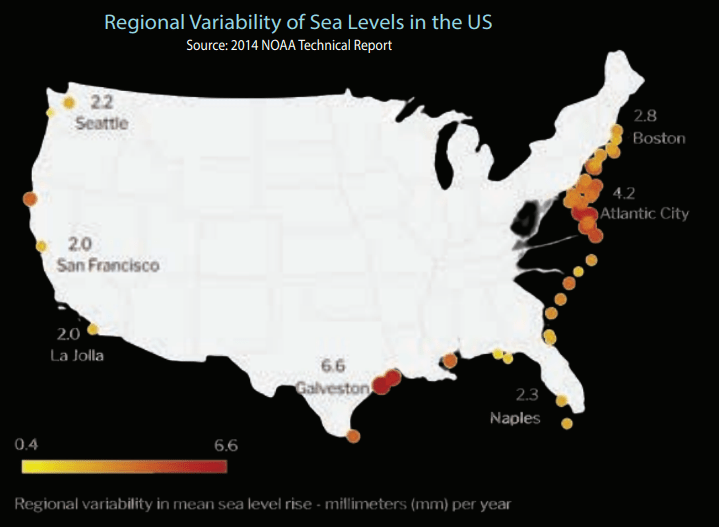

As part of my critical cartography final, I analyzed the impacts of inundation from sea level rise in the Bay Area on critical infrastructures (waste water treatment plants, hospitals, schools, and fire stations).
Utilizing ArcGIS Pro, I combined the mean higher-high water predictions from the ART Bay Shoreline Flood Explorer with critical infrastructures in the Bay Area counties to map out these vulnerabilities. Additionally, I calculated the estimated economic structural cost of these inundated infrastructures.
Sea Level Rise Impacts
02
Impacts on Critical Infrastructure Along the Coastal Borders of the Bay Area

Sea Level Rise Projections (1897-2100)

According to the San Francisco Baykeeper, NOAA makes six different scenario predictions for San Francisco: extreme, high, intermediate-high, intermediate, intermediate-low, and low.
Similarly, most of the predicted sea level rise would match California and the global average.
By gauging future projection levels, we can better mitigate and adapt to coastal flooding. Furthermore, by clarify this threat, we can stop contributing to greenhouse gas emissions to stabilize the concentrations of carbon dioxide and global temperatures.

Why measure sea level rise?
The cost of damages to homes and businesses from sea level rise is estimated to be $70 billion by 2100. However, by assessing vulnerable areas and resiliency regional planning, we can minimize the socioeconomic burdens of sea level rise within the Bay Area. Specifically, by visualizing homes and infrastructure vulnerable to sea level rise, communities can better prepare themselves for possible coastal flooding.
What causes sea level rise?
While global sea level rise is caused by global warming (melting glaciers and expanding seawater) which is also a result of the greenhouse gas effect. Regional sea level rise is influenced by a variety of factors that range from particular regions. As for the Bay Area, these factors include climate, carbon emissions, ocean circulation, and natural geological processes. While this can also be impacted by human-induced factors such as oil withdrawals.

Bay Area Shoreline Analysis
The Bay Shoreline Flood Explorer Map was developed by Adapting to Rising Tides (ART), a program by the SF Bay Conservation and Development Commission working to increase the resilience of communities to sea level rise.
The predictions and mapping of vulnerable communities can help to understand how to best protect shorelines and communities. The data provided captures permanent and temporary flooding impacts from sea level rise scenarios 0-108 feet. However, there are limitations to the dataset and maps: geomorphic processes related to the erosion of the shoreline, riverine flooding that accounts for rainfall-runoff, rising groundwater tables, etc.
What is Mean Higher-High Water (MHHW)
The Mean High-High Water (MHHW) is calculated from the average of two high tides in a daily tide cycle from the 19 year National Tidal Datum Epoch (1983-2001) that was adopted by NOAA in order to determine tidal computations and measure change. The MHHW provides a base elevation from which to add water for sea level rise.
Storm Surges & King Tides
Storm surges occur when there is an abnormal rise of seawater typically caused by strong winds and low atmospheric pressure from a storm. There is a 20% chance that a 5-year storm surge may occur and/or a 2% chance that a 50-year storm surge may occur in a given year.
These predictions help to monitor the likelihood of flooding. Additionally, King Tides are predictable high tides due to a new or full moon when the Earth is closest to the moon.
Mapping Vulnerability & Risks
03
Critical Infrastructure Risks
Critical Infrastructure plays a crucial role in providing for various functions in the community; losses of these infrastructures can result in social, economic, and health consequences. These magnified consequences can exacerbate vulnerabilities, perpetuating a cycle of inequity for impacted communities. Furthermore, adaptation planning for critical infrastructure is more complex than typical developments, because of its larger regional scale and components that span over multiple jurisdictional boundaries.
The Bay Area 2100 Projected Sea Level Rise models a scenario of impacted civic infrastructure: sewage treatment plants, hospitals, �fire stations, and schools. Clearly, most of these critical infrastructures are at risk of coastal flooding.
As mentioned in the California Coastal Commission’s 2021 Guidance Plan on Critical Infrastructure at Risk, “Not only are a significant number of critical assets vulnerable to sea level rise, but these types of assets are interconnected.”

Socioeconomic Vulnerability
Vulnerable communities in food prone areas already face existing inequities, which can be even more burdensome with expensive food insurance. Risk assessments conducted by the Stanford Urban Risk Framework highlights the annual damages from sea level rise along with social risk and financial instability. The study notes how “low-income households were affected as a proportion of their income and just how unsustainable it is for those types of households to absorb these costs.”
A Resilient Future
In order to mitigate and adapt to a more resilient future, we must consider methods to protect vulnerable infrastructures and communities.
One such method is coastal armoring. Coastal armoring can vary from hard to soft (or gray to green). Conventional strategies include sea walls, levees, floodwalls, embankments, natural shorelines, wetlands, etc. However, within the Bay, physical barriers and structures actually exacerbate erosion by increasing the force of waves that ricochet o� these hard structures and further erode the shoreline due to the tidal prism of the Bay.
Thus, it is integral to closely monitor and analyze shoreline development and levee construction in communities prone to flood risk. And even more urgent to understand other phenomena like tidal dissipation and tidal amplification that is unique to the geography of the Bay to address sea level rise.
Estimated Structural and Contents Losses for 100-Year Storm

Structural and Economic Impacts
The estimated structural and content losses in the Bay Area region as a result of the 100-year storm and 1 meter of sea level rise would approximately be $70 billion dollars. This excludes the short-term probability that homes may be partially damaged.
Furthermore, sea levels will continue rising after 2100 and structural repair will not be possible, rather abandonment or coastal retreat will be likely. Across the Bay Area counties, the economic damages are tremendous. Moreso, this is also excluding “sunny day flooding,” the everyday flooding of roads. While communities can endure minor flooding and risks, these nuisances will become more exasperated and evident with needs to retrofit, coastal armor, and/or retreat.
Other impacts of coastal flooding and King Tide events can also include routine flooding of roadways and arteries (especially in low-lying areas) with unforeseen impacts of economic activity and job opportunities.
Regional Variability of Sea Levels in the US

Check out my other projects
04